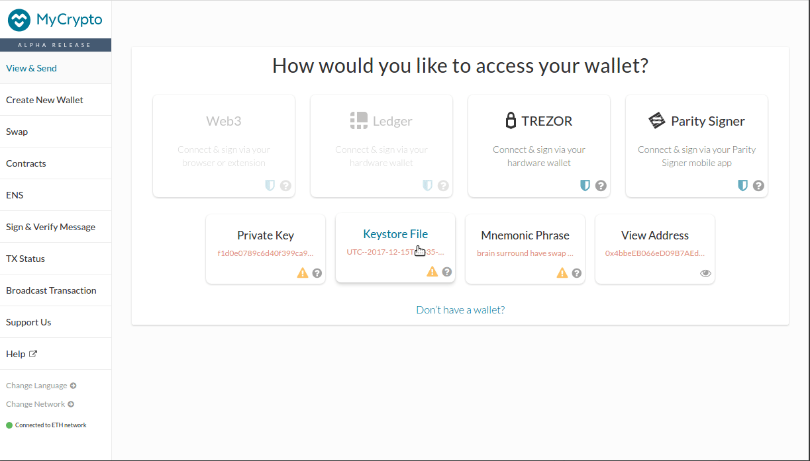

Parity Public Wallet Deprecation
This service has been deprecated and can not be used anymore. This page now allows to access and download any JSON/UTC keystore file used by wallet.parity.io and stored in your browser. This JSON/UTC keystore file is encrypted with a password defined upon account creation. It contains the encrypted account private key, it is therefore very important not to transfer it to nontrusted websites. This file, together with the right password, allows accessing an account on Parity client or any compatible 3rd party application. Below are step by step tutorials for MyCrypto Desktop application, Metamask or MyCrypto web application. If you forgot the password to open an account but have the recovery phrase (given at the account creation), you can recover your account using Parity Ethereum client.
Here are the accounts found on your browser, click on "Download" to store the JSON/UTC keystore file on your computer:
View and use your account on MyCrypto Desktop application
- Visit MyCrypto download page and download the application for your platform.
- Make sure to read and understand the warning.
- Click on
Keystore Filebutton. - Click on
Select wallet fileand select the desired file. - Enter the password corresponding to this account and click
unlock. - You can now see the balance of your account and send Ether from it.

View and use your account on Metamask beta
Metamsk beta allows using an account from a JSON/UTC file. Here is how to proceed:
- If you haven't done so already download Metamask on your favourite browser.
- If you haven't any yet, create a dummy account to be able to use the beta version of Metamask.
- In the hamburger menu from the top right corner, select
Try beta!. - Using Metamask in full-screen mode is more convenient, click on the arrow icon at the top right to switch to full screen.
- Slick on the account image at the top right and select
Import account. - Select type
JSON file. - Select the previously downloaded JSON/UTC file and click
Import.

View and use your account on MyCrypto
- Visit MyCrypto and click on
Keystore Filebutton. - Make sure to read and accept the warning then click on
continue. - Click on
select wallet fileand select the desired file. - Enter the password corresponding to this account and click
unlock. - You can now see the balance of your account and send Ether from it.